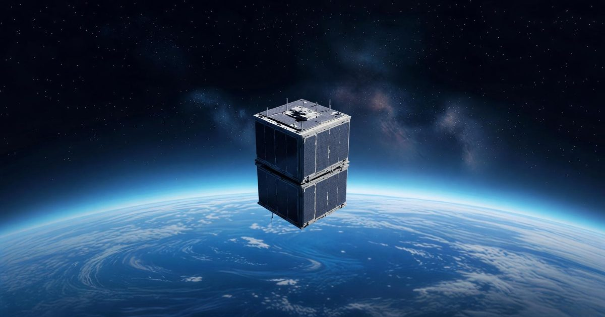

В России создали мини-детектор гамма-излучения и космических лучей
Такие приборы установят на спутники-кубсаты Российские учёные из МИФИ разработали компактные космические детекторы для исследования гамма-излучения и заряженных частиц.
Приборы предназначены для установки на малых космических аппаратах (кубсатах), размеры устройств не превышают 1U (10х10х10 см).
Такие детекторы планируют устанавливать на внешнюю поверхность спутников CubeSat 3U от компаний «Спутникс» и «Геоскан».
Источник изображения: Grok Imagine // В основе детекторов лежит гамма-спектрометр, который был доработан для регистрации потоков заряженных космических лучей.
Задачей разработчиков было различить, когда через детектор проходит фотон электромагнитного излучения (гамма или рентгена), а когда — заряженная частица.
Для этого детектор окружён так называемой системой антисовпадений.
Заряженная частица оставляет сигнал в системе антисовпадений, а гамма-квант — нет.
Поэтому если в антисовпадениях сигнал есть, значит, через прибор прошла заряженная частица, рассказали в МИФИ.
Источник изображения: © Официальный сайт МИФИ // Идея нового прибора заключается в том, чтобы миниатюризировать аппаратуру крупных обсерваторий.
Например, прибор PAMELA, который работал на спутнике «Ресурс-ДК1» в 2006-2016 гг.
весил около 470 кг.
По сравнению с аппаратами такого класса новый миниатюрный детектор работает в области низких энергий, но тоже представляет научный интерес, отметили в МИФИ.
Учёные считают, что детекторы, установленные на спутнике-кубсате, могут не только работать самостоятельно, но и включаться в крупные астрономические проекты.
Они могут указывать более мощным обсерваториям секторы неба, где происходят интересные астрофизические события.
Запуск трёх приборов НАТАЛИЯ в космос запланирован на 2027 год.